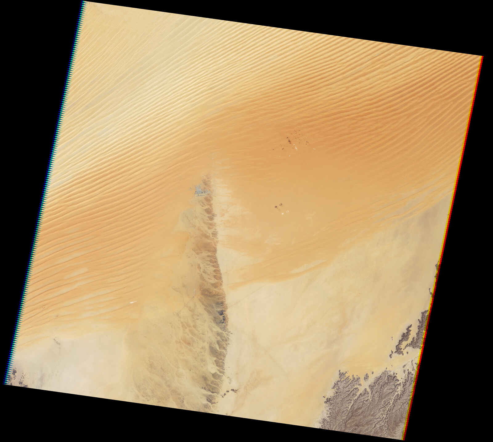

A new study brings together stone tools and animal and plant remains in southern Saudi Arabia, raising the possibility of poison-assisted hunting while questions remain about the tools’ age and function.
In a landscape now covered by the sands of the Empty Quarter, traces of an ancient lake reveal an environment once richer in water and life. At ‘Uruq Aljelibah, beside the former Lake Mundafan in southern Saudi Arabia, an international team examined stone tools and animal and plant remains to investigate how people used these resources.
Published in Science on 12 November 2026, the study was led by researchers from Griffith University, King Abdullah University of Science and Technology (KAUST) and the Saudi Heritage Commission. KAUST reports that the Commission supported fieldwork during the 2023 season.
Combining stone and plants
The discoveries include more than 5,500 stone artifacts. Some points show impact damage and animal residues near their tips, with plant resin and fibers at their bases. Researchers interpret this distribution as evidence that stone points were mounted as components of composite hunting tools.
Plant remains also suggest uses beyond food, including materials that could be employed in making tools. Chemical markers associated with toxic plants were identified on some points, raising the possibility of their use in hunting. Those markers alone do not establish how the substances were prepared, whether they were deliberately applied to weapons, or whether they were effective.
An ancient lake, an age under scrutiny
The team associates the site with a humid phase around 125,000 years ago. According to the participating CENIEH research center, dating relied primarily on optically stimulated luminescence analysis of sediments, alongside independent tests on fossil hippopotamus teeth.
However, archaeologist Jeffrey Rose, who was not involved in the study, told Live Science that the tools were collected from the surface rather than the dated layers. He therefore regards the lake’s age as a possible maximum age for the tools. Co-lead researcher Chris Clarkson also stressed that whether this represents the earliest evidence of poisoned hunting weapons remains unresolved.
A broader picture of life
No human remains were found at the site. Its principal value lies in the combination of tools, organic traces and fossils, allowing hunting and plant use to be studied within an ancient freshwater environment. It offers a window into adaptation in Arabia, while further evidence is needed to resolve the tools’ age and interpret their chemical traces.
Image: NASA Earth Observatory / Jesse Allen and Robert Simmon, using United States Geological Survey Landsat data.